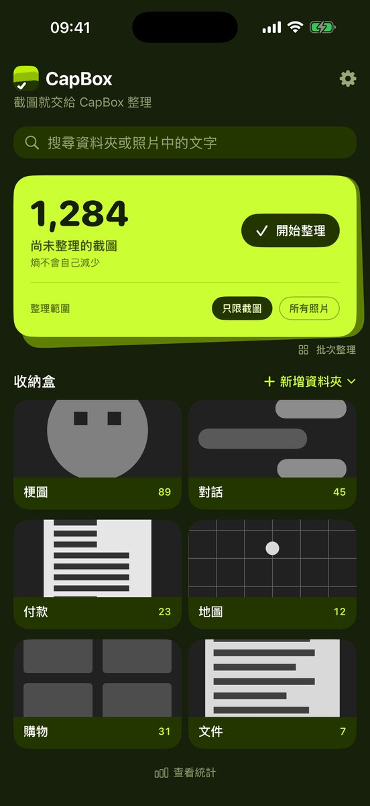
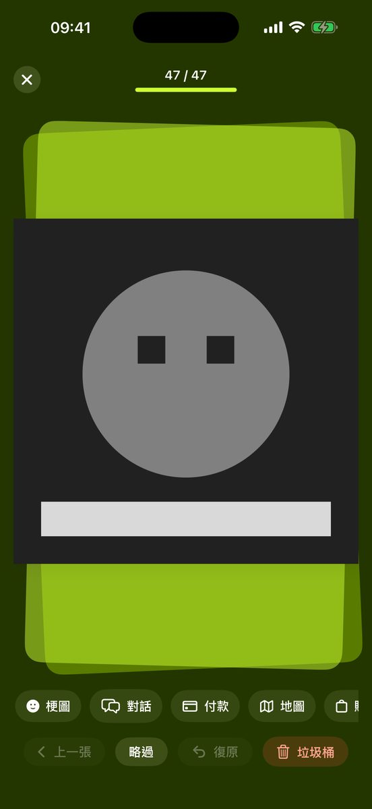
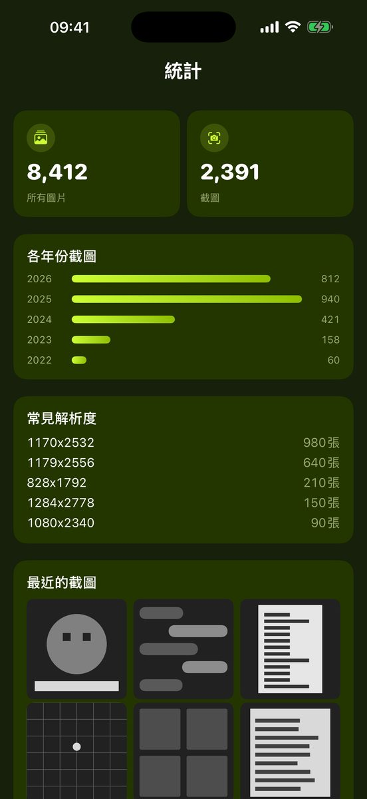

LINE 群組存下的梗圖、電子發票和網購訂單、找店時截的 Google 地圖 — 相簿裡混在一起的截圖，一張張滑過、點一下資料夾就分好。不需要的先放進垃圾桶再一次清空，之後用照片中的文字就能找到。

顯示還有幾張截圖尚未整理。可以只整理截圖，也可以從所有照片中整理。
一張張左右滑動，點下方的資料夾就完成。也能一次選多張批次送出。不需要的丟進垃圾桶。
資料夾就是「照片」App 中「CapBox」資料夾裡的真正相簿，即使刪除 CapBox，整理好的結果也會保留。
文字辨識和搜尋都在 iPhone 上處理。沒有伺服器，也就沒有地方可以傳送。免註冊，也沒有 App 內購買。
從梗圖、對話、付款、地圖、購物、文件的基本組合開始，或匯入原有的相簿。名稱、顏色、圖示隨時都能改。


不需要的截圖先丟進垃圾桶，確認後一次全部刪除。放錯的也能復原。
在裝置上辨識截圖裡的文字。不論是資料夾裡的照片，還是還沒整理的截圖，都能用文字找到。支援繁體中文、簡體中文、英文、日文、韓文。
在「照片」App 已經建好的相簿，可以匯入成 CapBox 資料夾，接著整理。
一張一張翻著整理，或多選一整批，一次送進資料夾。
每年累積了幾張截圖、哪種解析度最多，一目了然。
繁體中文、簡體中文、英文、日文、韓文。App 介面和文字搜尋都支援。
把堆積的截圖和梗圖一張張滑過、分進資料夾，不需要的先放進垃圾桶再一次刪除，還能用照片中的文字搜尋。全部在裝置上完成，免費使用。